ピントを変えて、ボケを合わせ直す（Z深度ボケ）
カメラの撮影距離を変えたら、もう一度「追加プリセット」で「Z深度ボケ」を選び、「選択した効果を適用」を押します。ボケは増えず、足してあるボケが今のピントに合い直します。先に足した効果もそのまま残ります。
SmartTools アドオン解説書
版 1.0.0 ／ 2026年11月18日 ／ Blender 5.1.2 用

Smart Composite Suite は、コンポジターで使う効果を「プリセット」（あらかじめ組んだノードのまとまり）として追加するアドオンです。追加されるのは Blender 標準のノードなので、追加した後は普通のノードとして自由に調整できます。サイドバーの「Smart Composite」タブには、見出しが 2 つあります。「常時機能切り替え」では、ファイルを開いた時などに自動で準備をしてくれる補助機能を選びます。「エフェクト／プリセット」では、効果を選んでノード画面に追加します。インストールの方法・日本語化・N パネルの開き方・「？」ヘルプの共通の使い方は、全体仕様書の該当章を見てください。
グローやボケを、ボタン 1 つでコンポジターに足せます
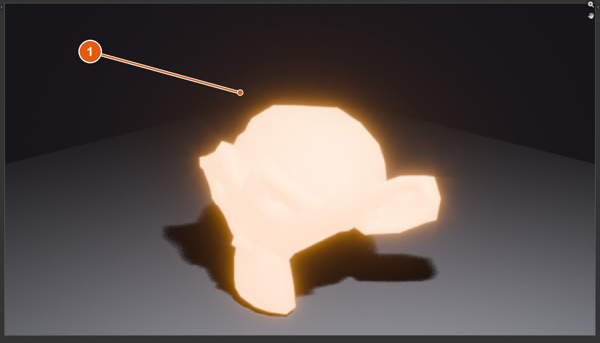
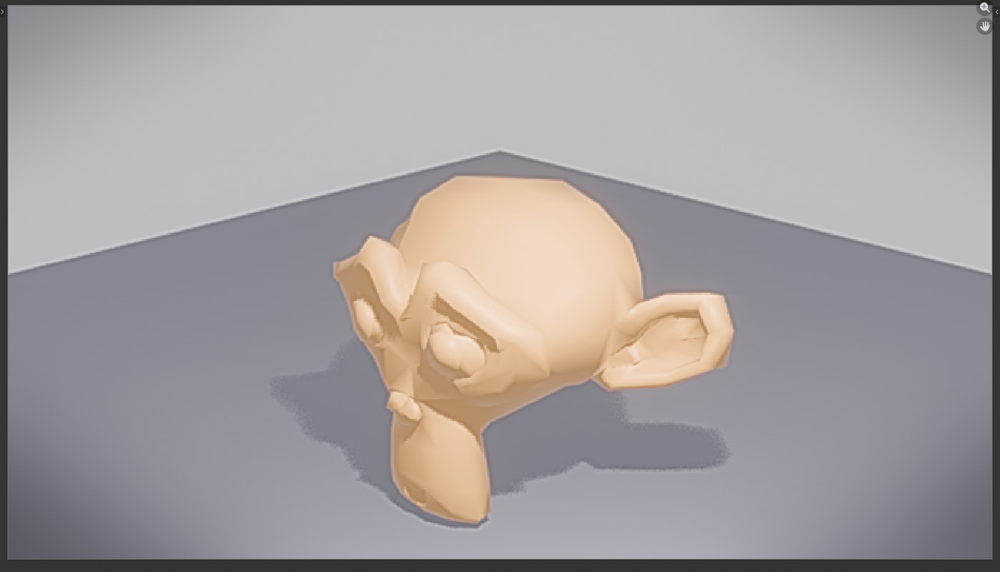

ボタン1つで、コンポジター（レンダー後の画像を仕上げるノード画面）にグローやボケなどのノードのまとまりを追加するアドオンです。
このアドオンを使うと、画面は次のように変わります。くわしい操作は 5 章の各機能の「実例」で説明します。
実例レンダー画像に光のにじみ（グロー）を足す（光るスザンヌで試した様子）
「高品質グロー」を選んで「選択した効果を適用」を押すだけで、明るい所から光がにじみ出るノードのまとまりがコンポジターに追加されます。レンダーし直すと結果に反映されます。


見どころ：前の図ではスザンヌの輪郭がくっきりしていますが、後の図では輪郭の周りに丸く光がにじみ、影の縁にも色がかかっています。
アドオンの入れ方・画面を日本語にする方法・N パネルと「？」ヘルプの共通の使い方は、「SmartTools 全体仕様書」にまとめています。先にそちらの 2〜5 章を読んでください。
| 入れる ZIP | Smart_Composite_Suite_1.0.0.zip |
|---|---|
| Blender の画面での名前 | Smart Composite |
| 動く Blender | 5.1.2 |
サイドバー（Nパネル）の「Smart Composite」タブにあります。主に使うのはコンポジター（ノードエディター）です。Smart Tools Manager が入っている時は、どのエディターにタブを出すかはその設定に従います。入っていない時は、コンポジター以外のエディターのサイドバーにも同じタブが出ます。
| 出る画面 | ノードエディター（コンポジター） |
|---|---|
| タブ | Smart Composite |
| モード | オブジェクトモード |

オブジェクトモードでノードエディターの種類を「コンポジター」にし、ノード画面にポインターを置いてNキーを押します。「Smart Composite」タブで「エフェクト／プリセット」を開きます。
入口全体の図では、「常時機能切り替え」の下に「エフェクト／プリセット」があります。
明るい部分がある絵をレンダーし、コンポジターでグローを追加します。ノードの接続と、レンダーし直した絵の明るい部分の縁を順に確認します。
追加されたグローのノードから出力への接続をたどり、再レンダー後の明るい輪郭を比べます。
冒頭の「代表的な機能」で紹介した機能の使い方を、図に番号を付けて順に説明します。図の中の番号と、図の下の一覧の番号が対応しています。図を押すと大きく表示されます。設定の一つ一つは 5 章の各見出しで説明します。
コンポジター（レンダーした画像を仕上げるノード画面）でグローやボケを作るには、ふつうはノードをいくつも置き、線でつなぎ、値を合わせます。Smart Composite Suite は、効果を選んでボタンを押すだけで、組み上がったノードのまとまりを「SCS」で始まる名前のフレームに入れ、既存のノードの右側に追加します。それまで出力につながっていた結果は新しいまとまりの入力になり、まとまりの結果が出力へつながります。自分で置いたノードは動かさず、やめる時は追加した分だけを消せます。下の 2 枚は、同じ場面で「高品質グロー」を適用する前と後のレンダー結果です。
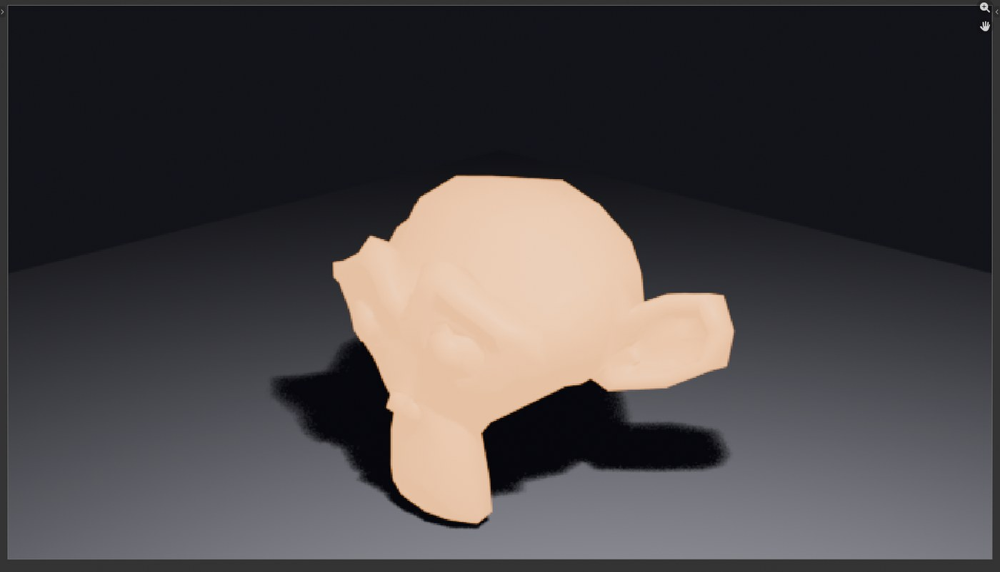
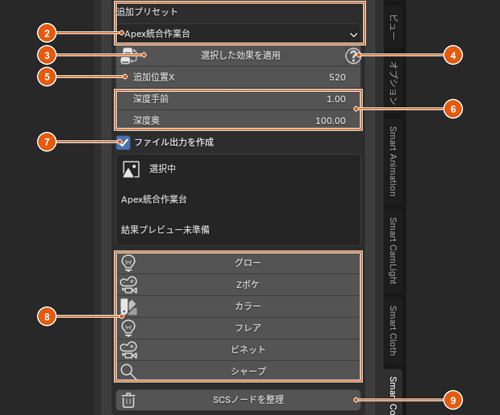
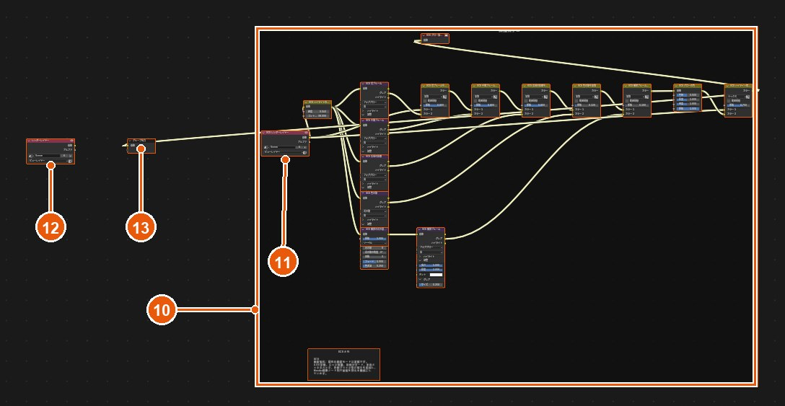
くわしい設定：5-3. エフェクト／プリセット
続けて別の効果を適用すると、前の効果の結果に次の効果が重なります。追加したフレームは右へ並び、前のフレームの結果が次のフレームへ入ります。下の 4 枚は、何も足していない状態から「高品質グロー」「ビネット仕上げ」「シャープ/ディテール」の順に押して、そのつどレンダーし直した結果です。


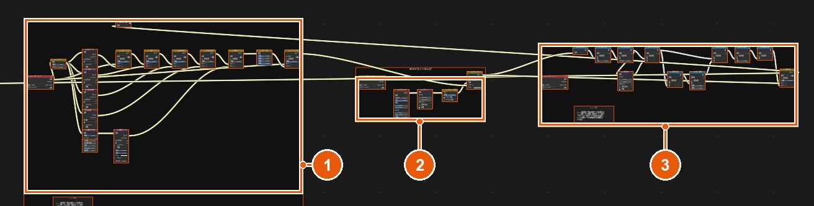
くわしい設定：5-3. エフェクト／プリセット
「Z深度ボケ」は、カメラの被写界深度の「撮影距離」を基準に、そこから離れた所をぼかします。押した時のレンズと撮影距離から、ぼけが目で分かる F 値を計算して入れます。撮影距離を変えてもう一度押すと、フレームを増やさずに今のピントへ合わせ直し、F 値も計算し直します。下の 2 枚は、手前にピントを合わせて押した後、撮影距離を 25m にして押し直した結果です。

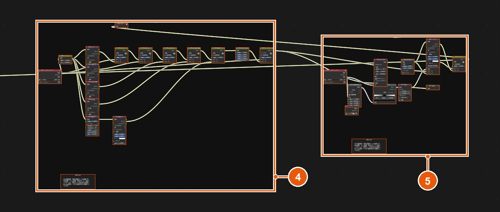
くわしい設定：5-3. エフェクト／プリセット
画面の上から順に、見出しごとに説明します。見出しの右の「？」を押すと、同じ内容の説明が画面にも出ます。青い枠の「実例」は、スザンヌなどの簡単なモデルで実際に操作し、3D ビューでの変化を前と後で並べたものです。
このアドオンの入口です。中に「常時機能切り替え」と「エフェクト／プリセット」の2つの見出しが箱になって並びます。2つとも最初は閉じています。
場所サイドバーの「Smart Composite」タブ
| 表示 | 働き |
|---|---|
| 三角のボタン | 見出しを開いたり閉じたりします。三角の下の見出しの文字を押しても同じです。閉じても、中の設定や有効・無効の状態は変わりません。 |
| ？（各見出し） | その見出しの「？」ヘルプを開きます。「常時機能切り替え」と「エフェクト／プリセット」では三角のすぐ右に、いちばん上の「Smart Composite」では右端にあります。「機能概要」「使用方法」「設定」の3つに分けて説明が出ます。 |
ファイルを開いた時などに自動で動く補助機能を、1つずつ有効・無効にする場所です。左に機能の名前、右に「有効」「無効」のボタンが並びます。補助機能は、Blender の起動時、.blend ファイルを開いた後、その項目を有効にした時、Smart Composite Suite の操作の前に、そのつど1回だけ確かめます。ずっと見張り続けることはしません。
場所「Smart Composite」タブの1つ目の見出し（時計のアイコン）
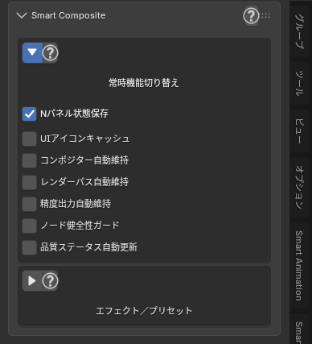
| 表示 | 働き |
|---|---|
| Nパネル状態保存 | 有効にすると、Nパネルで変えた設定を変えるたびに保存し、シーンを切り替えた時と次の起動の時に元に戻します。保存先は Blender 5.1 の config フォルダーの中の Smart_Composite_Suite フォルダーです。最初から有効です。無効にすると、その「無効」を1回だけ保存した後は、また有効にするまで書き込みません。 |
| UIアイコンキャッシュ | 独自の PNG アイコンを使うかどうかの切り替えです。Blender 5.1 では安定のため、有効にしても標準のアイコンで表示します。最初は無効で、無効のままで構いません。 |
| コンポジター自動維持 | シーンにコンポジターのノードツリーが無ければ作ります。「出力」タブの「コンポジティング」が無効なら有効にします。ファイルを開いた時にコンポジターを自動で準備したい時だけ有効にします。最初は無効です。 |
| レンダーパス自動維持 | 深度（奥行き）、ミスト、ノーマル（法線）、ベクトル、Cryptomatte など、合成に使うレンダーパスをまとめて有効にします。パスを自分で管理したいシーンでは無効のままにします。最初は無効です。 |
| 精度出力自動維持 | 出力の設定を、マルチレイヤーEXR、RGBA、高いビット深度、ZIP 圧縮に設定し直します。「コンポジティング」も有効にし、カラーマネジメントの露出を 0、ガンマを 1 に戻します。納品前のファイルで出力設定が戻るのを防ぎたい時だけ使います。最初は無効です。 |
| ノード健全性ガード | コンポジターのノードツリーと、レンダーレイヤー・ビューアー・出力のノードがあるかを確かめ、足りない物だけを作ります。レンダーレイヤーをつなぐのは、まだ何もつながっていないビューアーと出力だけです。今あるノードやつながりは変えません。最初は無効です。 |
| 品質ステータス自動更新 | ノードの数、Smart Composite Suite のノードの数、出力ノード、主なレンダーパスの状態を軽く読み取り、品質スコアを計算して記録します。パネルには、この記録を表示する欄はありません。最初は無効です。 |
| 各行のチェック | 各行の左の四角です。押すたびに有効と無効が切り替わり、有効の時は青くなってチェックが入ります。サイドバーをとても狭くすると、名前が折り返され、チェックの代わりに名前の下へ「有効」「無効」のボタンが出ます。 |
実例ノード健全性ガードで基本のノードをそろえる（空のノード画面で試した様子）
「ノード健全性ガード」を有効にすると、コンポジターに足りない基本のノード（レンダーレイヤー・ビューアー・出力）が作られ、つながります。
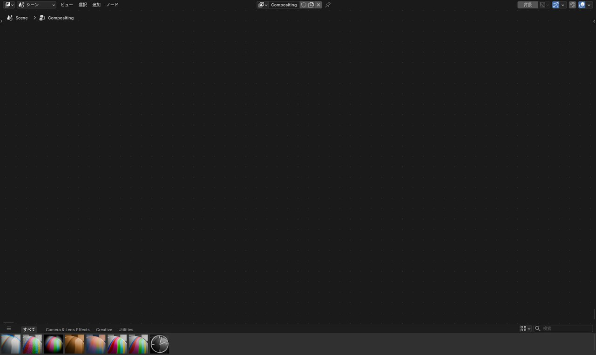
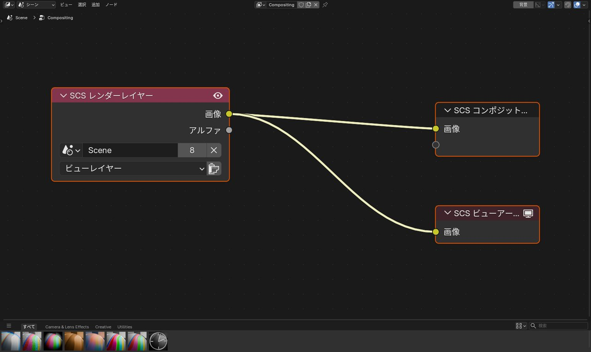
見どころ：前はノード画面が空っぽですが、後は「SCS レンダーレイヤー」が「SCS コンポジット出力」（出力）と「SCS ビューアー出力」（ビューアー）の 2 つのノードにつながった、すぐ使える形になっています。
実例合成に使うレンダーパスをまとめて有効にする（ビューレイヤーのパスの欄で試した様子）
「レンダーパス自動維持」を有効にすると、深度（Z）・ミスト・ノーマル・ベクトル・Cryptomatte など、合成でよく使うパスがまとめて有効になります。
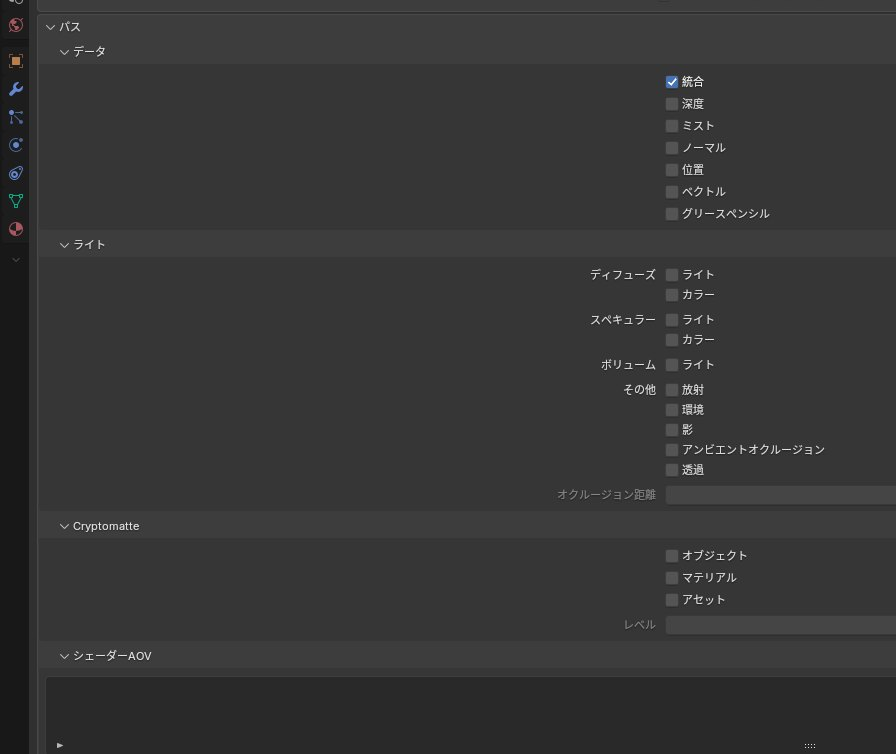
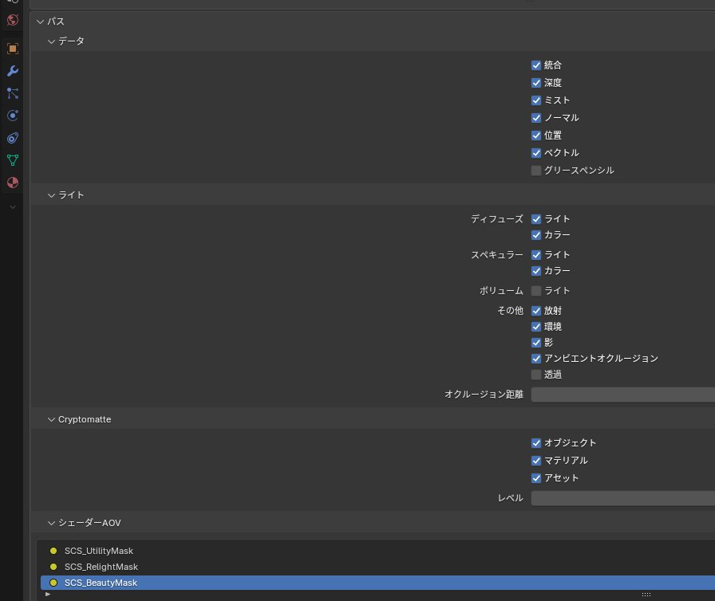
見どころ：プロパティエディターの「パス」の欄で、前は「統合」だけにチェックがありますが、後は深度・ミスト・ノーマル・位置・ベクトル、ライトのディフューズ・スペキュラー・放射・環境・影・アンビエントオクルージョン、Cryptomatte の 3 つにチェックが入り、「シェーダーAOV」にも「SCS_」で始まる項目が 3 つ加わっています。
実例出力の設定を高精度の形にそろえる（「出力」タブの設定で試した様子）
「精度出力自動維持」を有効にすると、出力の形式が マルチレイヤーEXR・高いビット深度・ZIP 圧縮に設定し直されます。
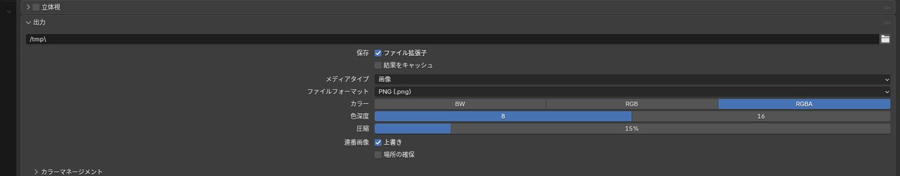
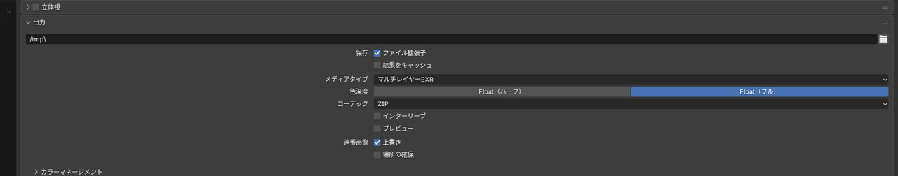
見どころ：「出力」タブの「出力」の欄で、前はメディアタイプが「画像」・ファイルフォーマットが「PNG」ですが、後はメディアタイプが「マルチレイヤーEXR」に変わり、色深度は「Float（フル）」、コーデックは「ZIP」になっています。
効果のプリセットを選んで、コンポジターのノード画面に追加する場所です。一覧から選び、「選択した効果を適用」を押して追加します。追加したノードは「SCS」で始まる名前のフレームにまとまり、既存のノードの右側に置かれます。続けて追加すると、前の効果の結果に次の効果が重なります。
場所「Smart Composite」タブの2つ目の見出し
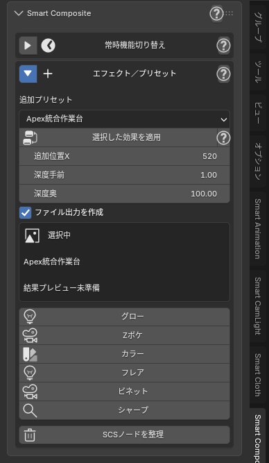
| 表示 | 働き |
|---|---|
| 追加プリセット | 追加するプリセットを一覧から選びます。最初は「Apex統合作業台」が選ばれています。 |
| 結果の画像 | 今選んでいるプリセットの結果の画像が、一覧の下に大きく出ます。画像を押すと、全部のプリセットの結果の画像が名前付きで並び、そこからも選べます。 |
| 選択した効果を適用 | 「追加プリセット」で選んだプリセットを、ノード画面に追加します。 |
| ？（「選択した効果を適用」の右） | 今選んでいるプリセットの働きを説明する「？」ヘルプを開きます。追加する前に、何をするプリセットかを読めます。 |
| 追加位置X | 新しいフレームを、既存のノードの右へどれだけ離して置くかの距離です。最初は 520 で、160〜2000 の間で決めます。既存のノードと重なる時は大きくします。既存のノードの位置は動きません。 |
| 深度手前 | 奥行きを使うプリセット（「深度フォグ/遠近」など）が効き始める距離です。最初は 1 です。追加する時の値が使われ、追加した後のノードは変わりません。「Z深度ボケ」はカメラのピントを基準にするので、シーンにカメラがある時は使いません。 |
| 深度奥 | 奥行きを使うプリセットが最大に効く距離です。最初は 100 で、深度手前より大きい値にします。追加する時の値が使われ、追加した後のノードは変わりません。「Z深度ボケ」は、シーンにカメラがある時は使いません。 |
| ファイル出力を作成 | チェックを入れると、ファイル出力のノードをプリセットと一緒に作ります。外すと作らないので、レンダーのたびに EXR ファイルが書かれません。「マルチパス出力」と「納品整合チェック」は、外している時は何も追加しません。 |
| SCSノードを整理 | このアドオンが追加したノードだけをまとめて消します。自分で置いたノードは残り、出力への線はレンダーレイヤーへ戻ります。 |
実例レンダー画像に光のにじみ（グロー）を足す（光るスザンヌで試した様子）
「高品質グロー」を選んで「選択した効果を適用」を押すだけで、明るい所から光がにじみ出るノードのまとまりがコンポジターに追加されます。レンダーし直すと結果に反映されます。
見どころ：前の図ではスザンヌの輪郭がくっきりしていますが、後の図では輪郭の周りに丸く光がにじみ、影の縁にも色がかかっています。
実例追加されるノードのまとまりを見る（光るスザンヌの場面のノード画面で試した様子）
プリセットを追加すると、ノード画面に「SCS」で始まる名前のフレームができ、その中に効果のノードがまとまって入ります。
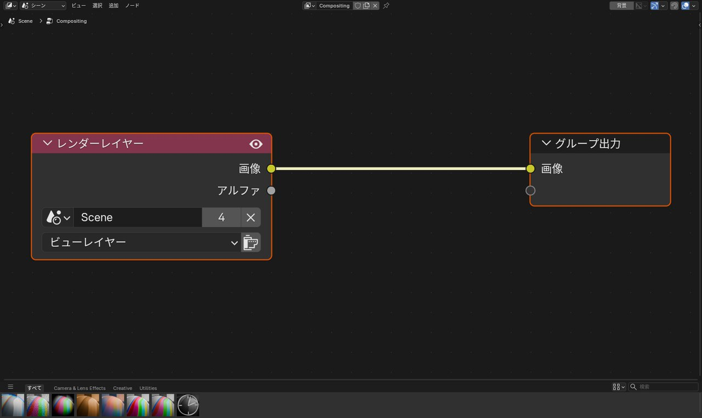
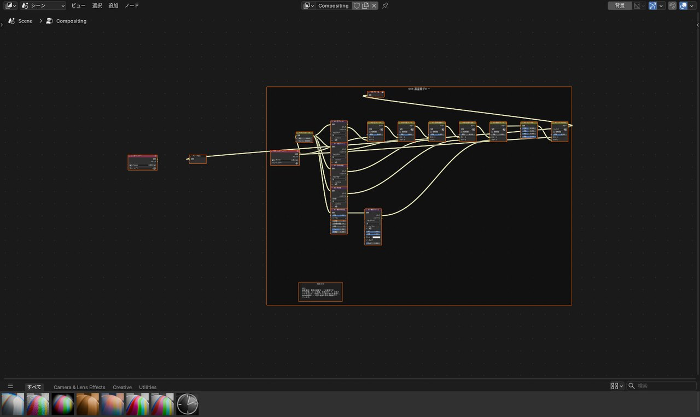
見どころ：前は「レンダーレイヤー」と「グループ出力」の 2 つだけですが、後は元の 2 つのノードの右側に「SCS 高品質グロー」のフレームができ、中にたくさんのノードが並んでつながっています。最後のノードから元のグループ出力へ線が戻ります。
実例画面の四隅を暗くする（ビネット）（スザンヌで試した様子）
「ビネット仕上げ」を適用するだけで、画面の四隅を暗くして中央に目が行くようにするノードのまとまりを追加します。
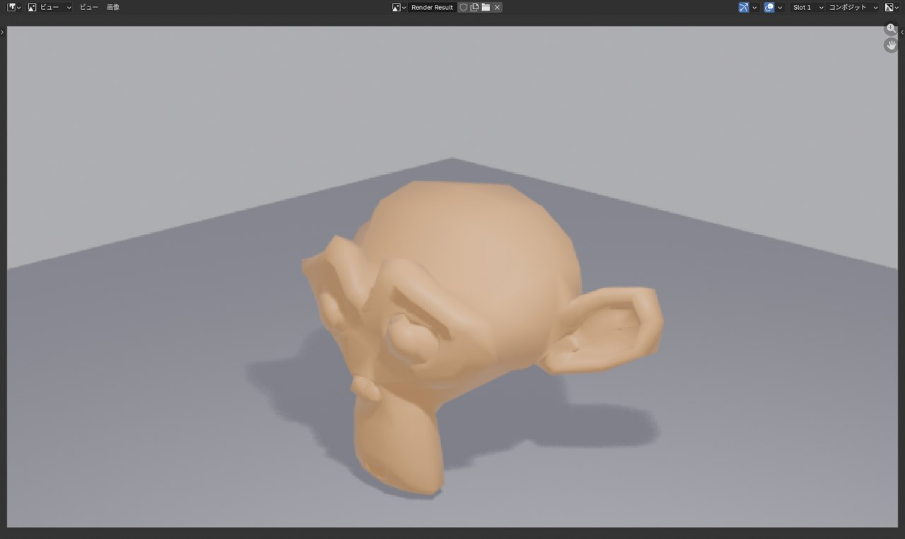
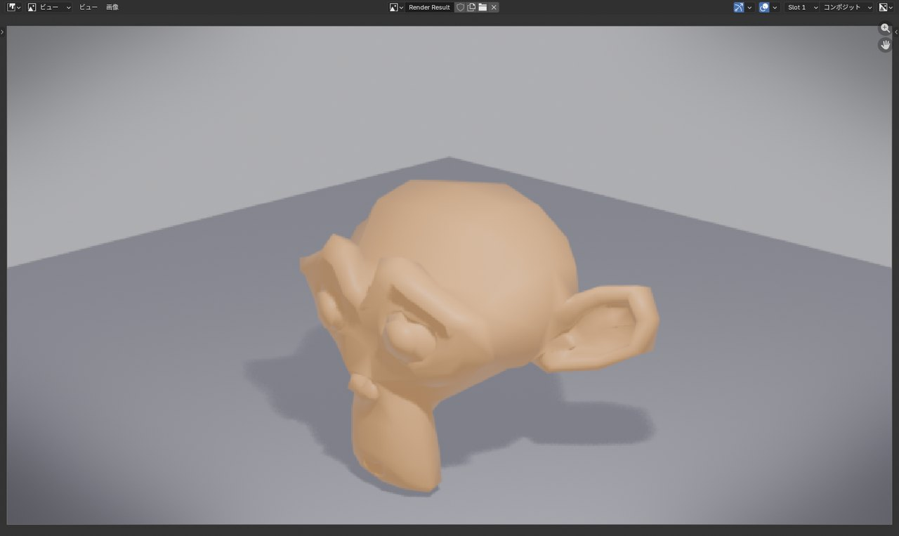
見どころ：後の図では四隅が暗く沈み、真ん中のスザンヌに目が行きます。四隅を前の図と比べると分かります。床の手前の中央は変わりません。
実例追加したノードだけをまとめて消す（SCSノードを整理）（ノード画面で試した様子）
「SCSノードを整理」を押すと、このアドオンが追加したノードだけが消えます。自分で置いたノードは残り、出力への線はレンダーレイヤーへ戻ります。
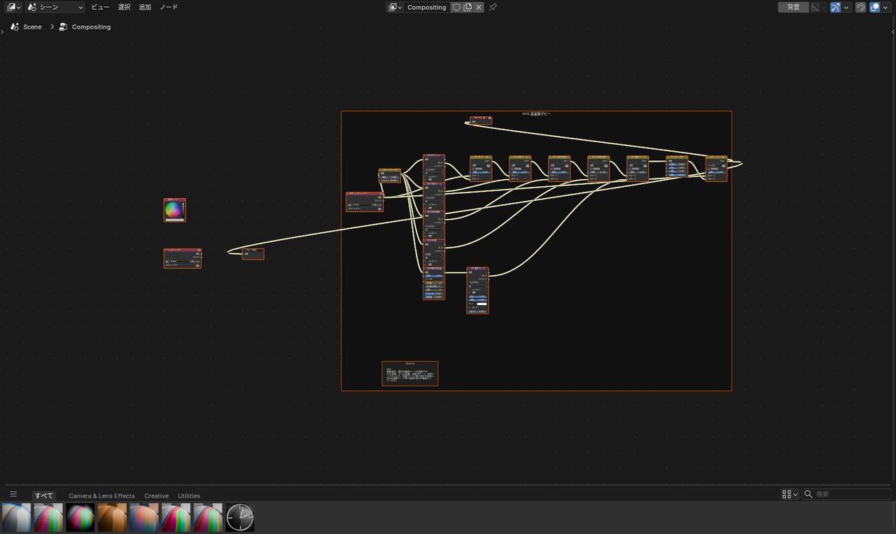
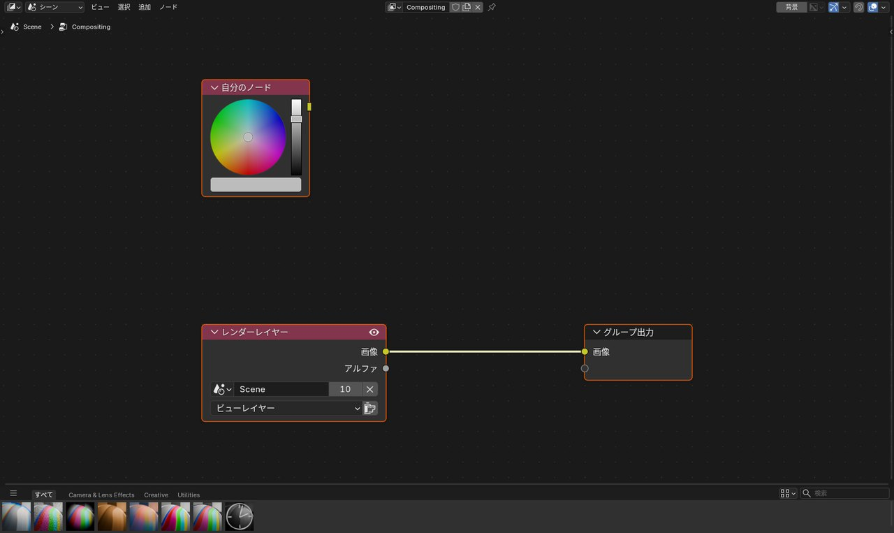
見どころ：「高品質グロー」で増えたフレームが消え、元の「レンダーレイヤー」「グループ出力」と、自分で置いた「自分のノード」だけが残ります。「レンダーレイヤー」から「グループ出力」への線も元どおりです。
実例プリセットを続けて追加して効果を重ねる（ノード画面で試した様子）
プリセットを続けて押すと、前の効果の結果に次の効果が重なります。押した順に効きます。

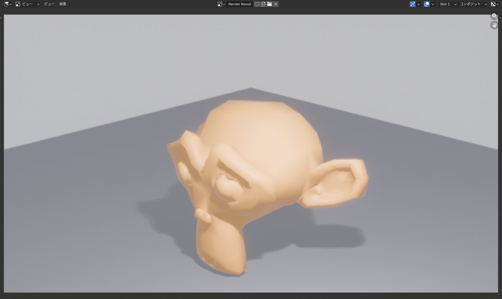
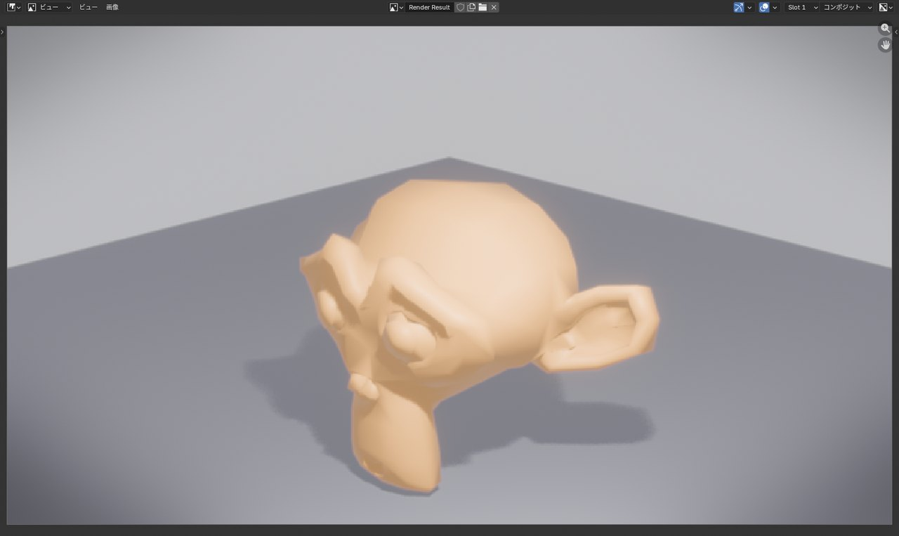
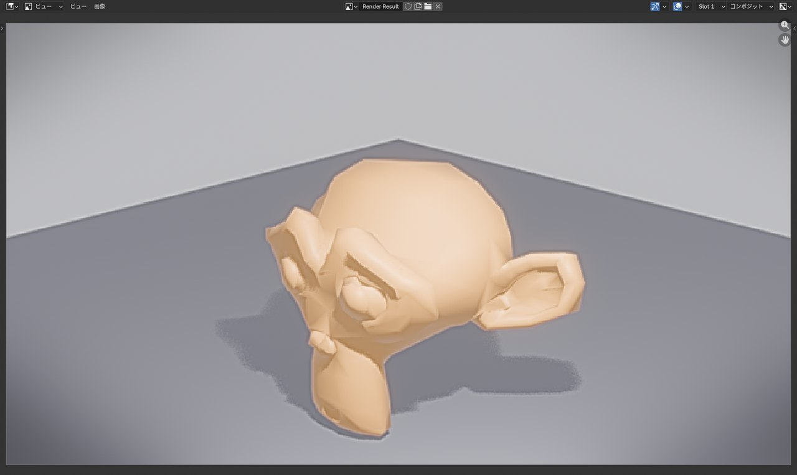
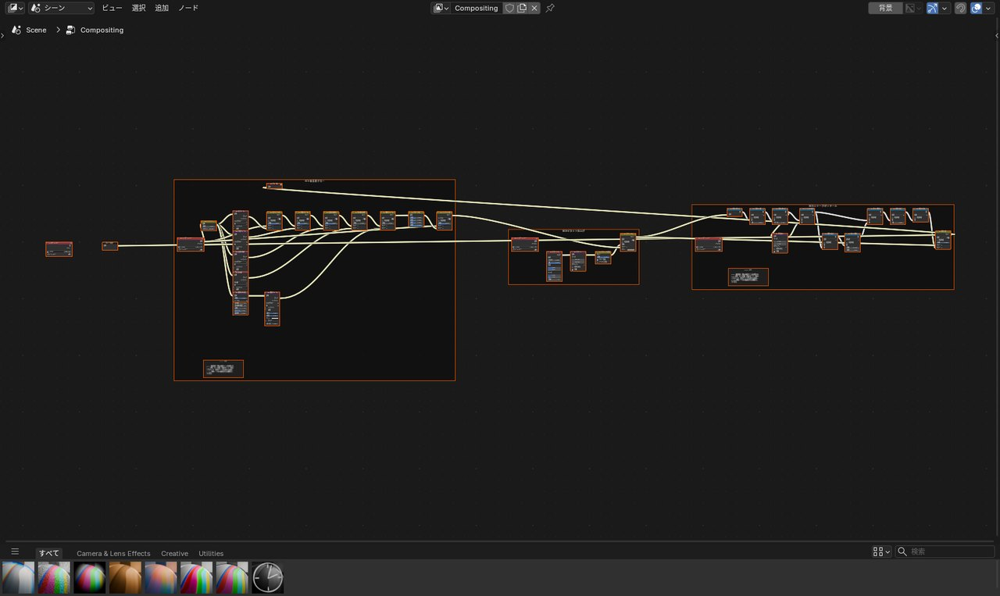
見どころ：光のにじみの上に、四隅の暗さと輪郭のくっきりさが順に加わります。ノード画面ではフレームが右へ順に並び、前のフレームの最後のノードが次のフレームへつながります。いちばん右のフレームの最後のノードから左の「グループ出力」へ線が戻ります。
実例ノードが何も無いシーンからグローを足す（光るスザンヌで試した様子）
コンポジターのノードツリーが無いシーンでも、「選択した効果を適用」を押すだけで準備されます。
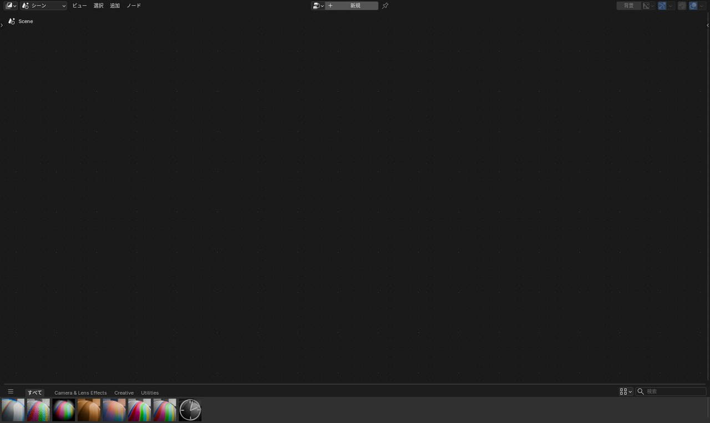
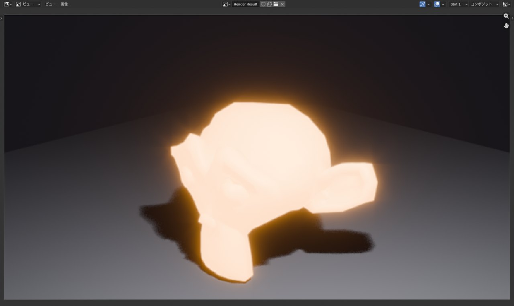
見どころ：前はノード画面に何もありません。後は「レンダーレイヤー」と「グループ出力」が自動で入り、その右に「SCS 高品質グロー」のフレームができます。そのままレンダーすると、スザンヌの周りに光がにじみます。
実例奥行きに合わせてぼかす（Z深度ボケ）（手前のスザンヌと奥の青いスザンヌで試した様子）
「Z深度ボケ」を適用するだけで、カメラのピントの距離を基準に、そこから離れた所をぼかすノードのまとまりを追加します。ここでは、手前のスザンヌをカメラから約 23m、奥の大きな青いスザンヌを約 80m に置いて試します。
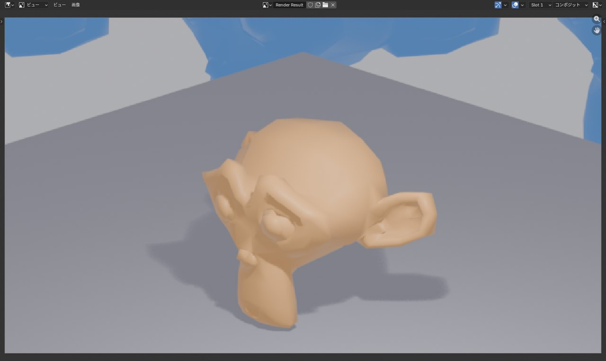
見どころ：ピントを合わせた手前のスザンヌはくっきりしたままで、奥の青いスザンヌと背景の輪郭がぼけます。F 値を小さくすると、奥のぼけがさらに大きくなります。
実例ふつうの距離のシーンでぼかす（Z深度ボケ）（手前のスザンヌと 25m 先の青いスザンヌで試した様子）
押した時のレンズと撮影距離に合わせて、ぼけの強さが決まります。奥の物まで十数 m〜25m ほどのシーンでも、押すだけでぼけます。ここでは、手前のスザンヌをカメラから約 8m、青いスザンヌを 25m に置き、レンズは 50mm のままで試します。 新しいシーンのままで、深度パスはオフです。押すと有効になります。
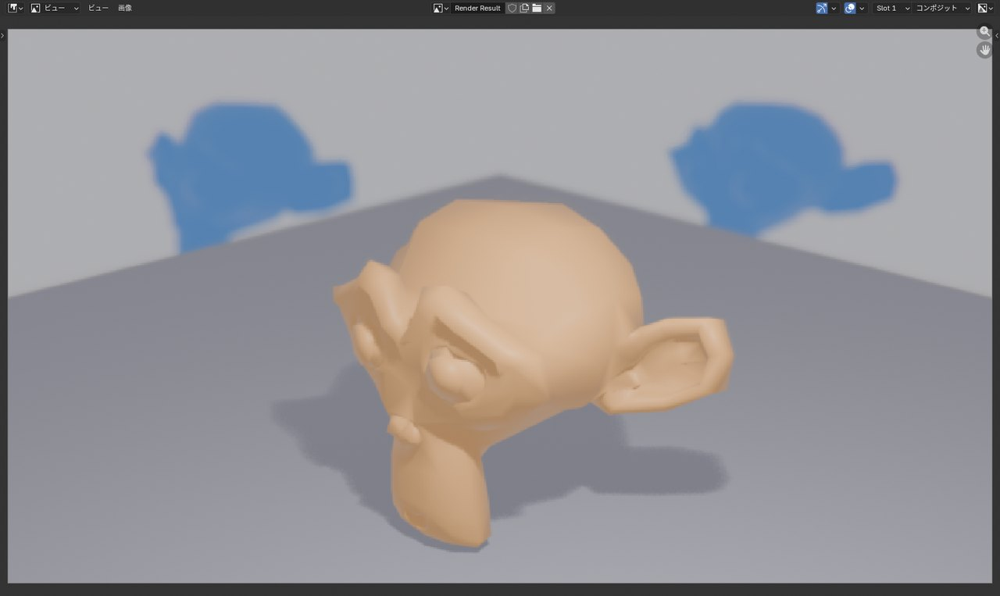
見どころ：押しただけで、奥の青いスザンヌと床の奥がぼけます。ピントを合わせた手前のスザンヌはくっきりしたままです。F 値を大きくすると、ぼけが弱くなります。
実例ピントを奥に合わせて手前をぼかす（Z深度ボケ）（手前のスザンヌと 25m 先の青いスザンヌで試した様子）
ぼけるのはピントから離れた所です。奥にピントを合わせてから押すと、手前の物がぼけます。

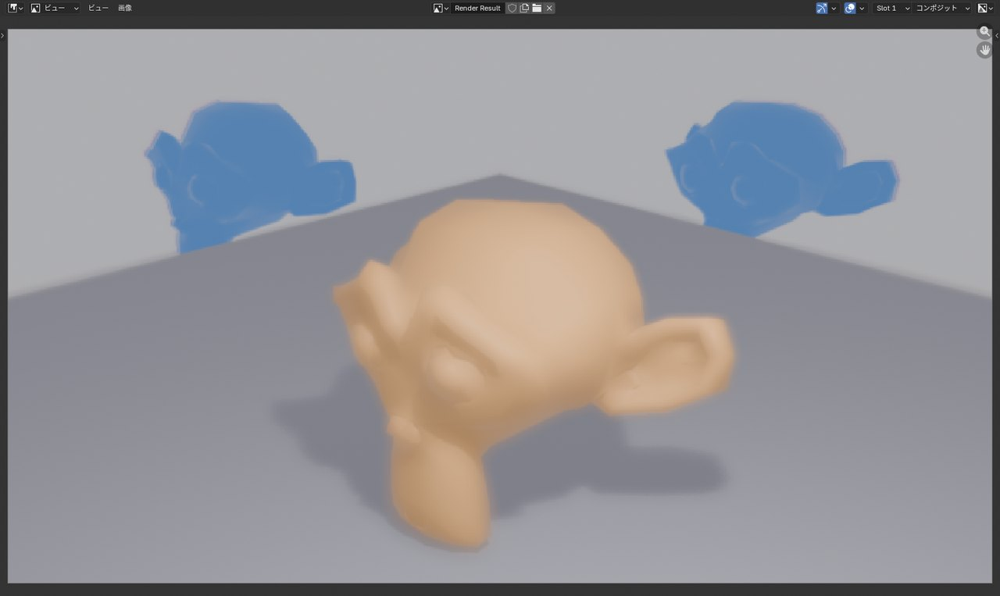
見どころ：前の実例とは逆に、奥の青いスザンヌがくっきりしたままで、手前のスザンヌがぼけます。カメラの撮影距離を変えた時は、もう一度「Z深度ボケ」を適用すと合わせ直せます。
実例ピントを変えて、ボケを合わせ直す（Z深度ボケ）（手前のスザンヌと 25m 先の青いスザンヌで試した様子）
カメラの撮影距離を変えたら、もう一度「追加プリセット」で「Z深度ボケ」を選び、「選択した効果を適用」を押します。ボケは増えず、足してあるボケが今のピントに合い直します。先に足した効果もそのまま残ります。
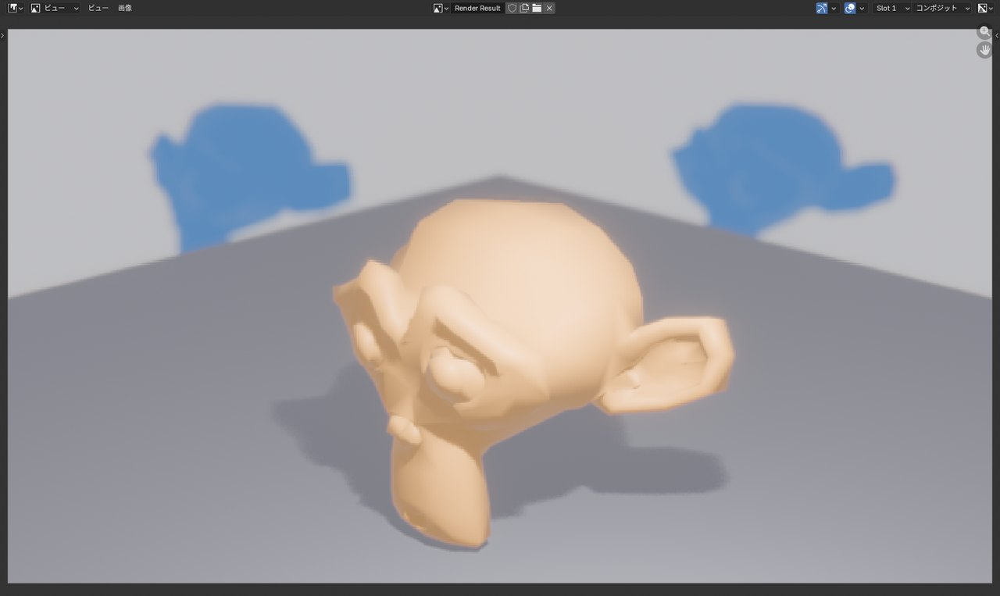
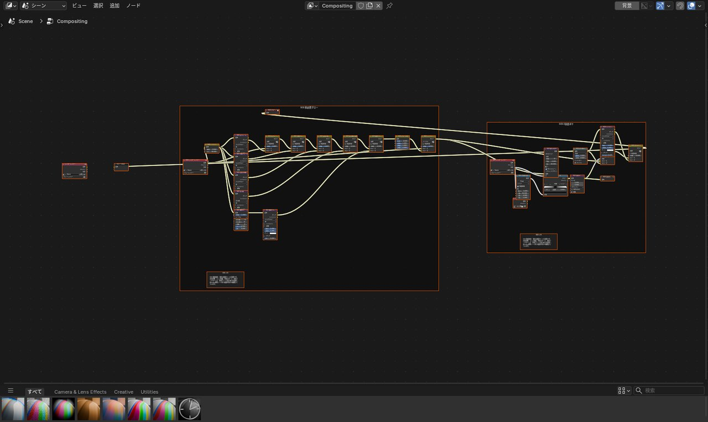
見どころ：押し直すと、くっきりする所が手前から奥へ移ります。「SCS Z深度ボケ」のフレームは 1 つのままで、グローの光のにじみも残っています。F 値も今の撮影距離に合わせて計算し直されるので、手で変えていた時は入れ直します。
実例総合の作業台を一度に足す（Apex統合作業台）（スザンヌで試した様子）
「Apex統合作業台」は 10 個の作業台をまとめて足します。階調・色合わせ・デノイズなど仕上げの段は順につながり、絵が少し整います。先に足した効果にも重なります。
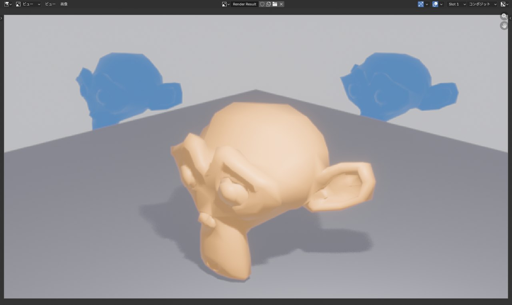
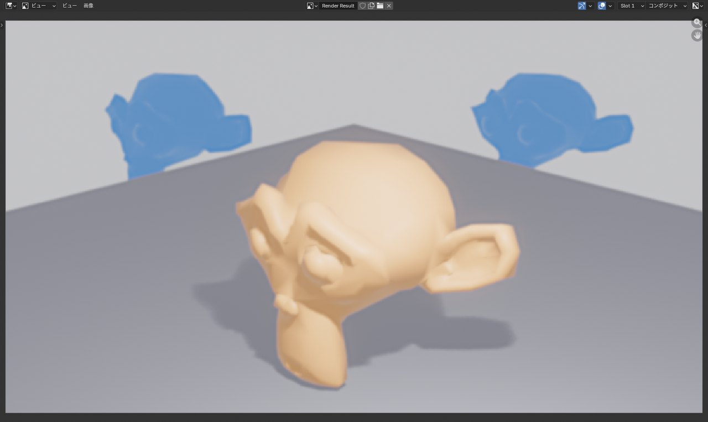
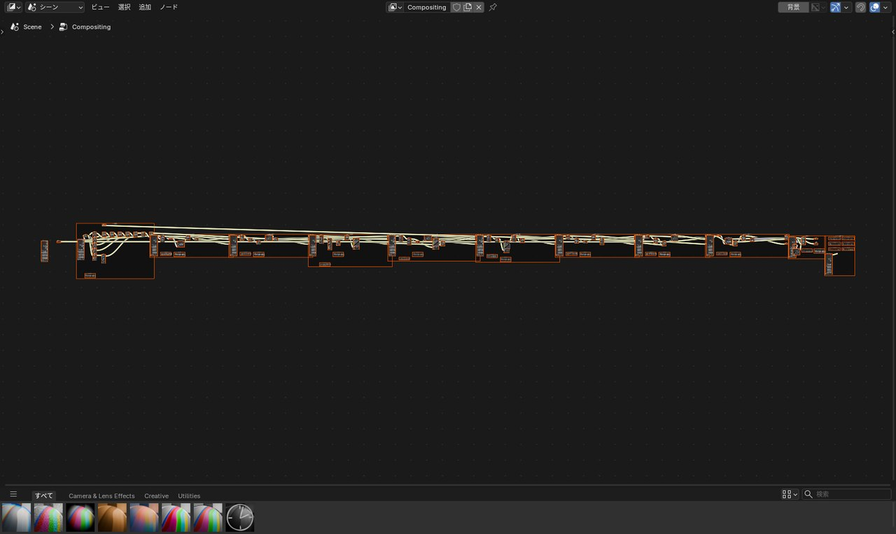
見どころ：グローの光のにじみが残ったまま、階調と色が少し整います。絵が大きく変わる効果ではありません。ノードは 100 個ほど増えます。確認用やレンズのぼけの段は置かれるだけで、使う時は線をつなぎ直します。
実例光の筋や斑点を足す（フレア）（スザンヌと光る小さな球で試した様子）
「レンズフレア・ビルダー」を適用するだけで、レンズに光が入った時のような光の筋や斑点を足すノードのまとまりを追加します。
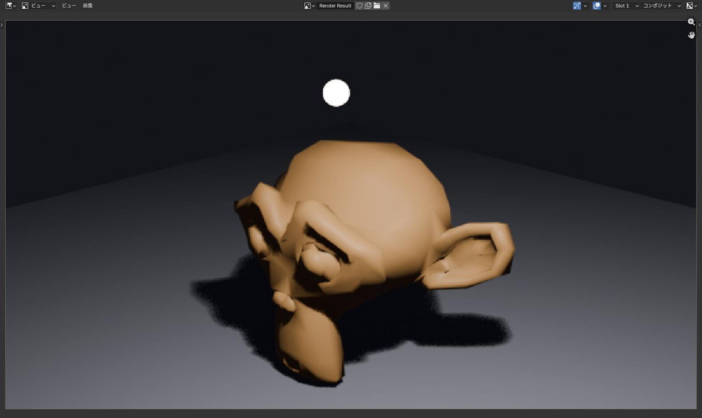
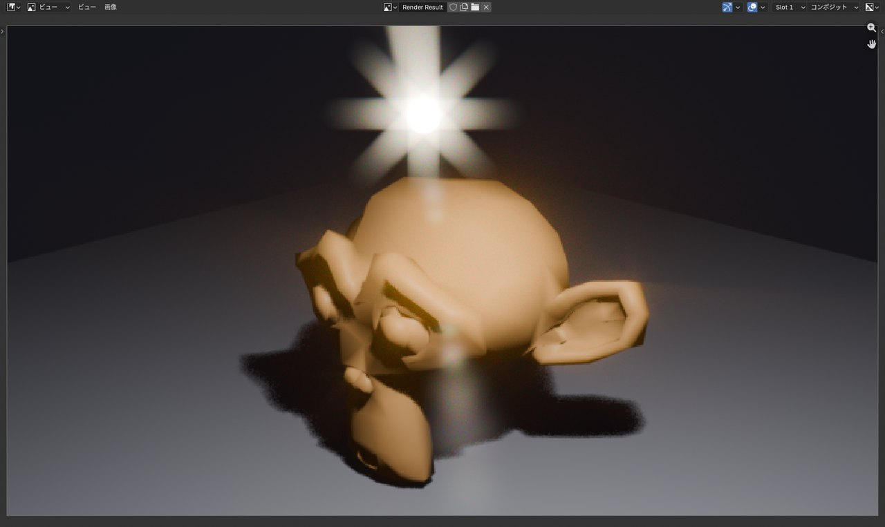
見どころ：光る球から放射状に光の筋が伸び、周りに光がにじみます。球から画面の中央を通る線の上（頭の上・鼻の右・手前の床）に、ぼんやりした光の斑点も出ています。
実例輪郭をくっきりさせる（シャープ）（スザンヌで試した様子）
「シャープ/ディテール」を適用するだけで、輪郭や細部をくっきりさせるノードのまとまりを追加します。
見どころ：床と背景の境目や、スザンヌの輪郭・目の周りの段差が、前よりくっきりします。輪郭のそばがわずかに明るくなったり暗くなったりするので、強さはノードで調整します。
実例色味を整えるノードを並べる（カラー）（スザンヌで試した様子）
「カラーグレード・パネル」を適用するだけで、露出・色のバランス・コントラスト・色相と彩度・カーブのノードを一式追加します。押しただけではほとんど色は変わらず、中の値を変えて色を作ります。

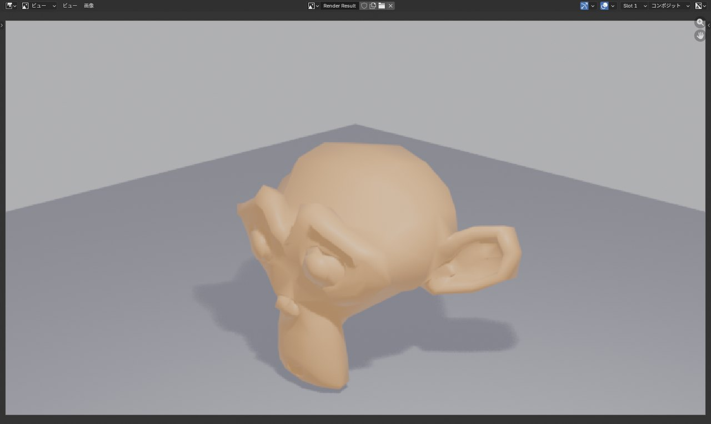
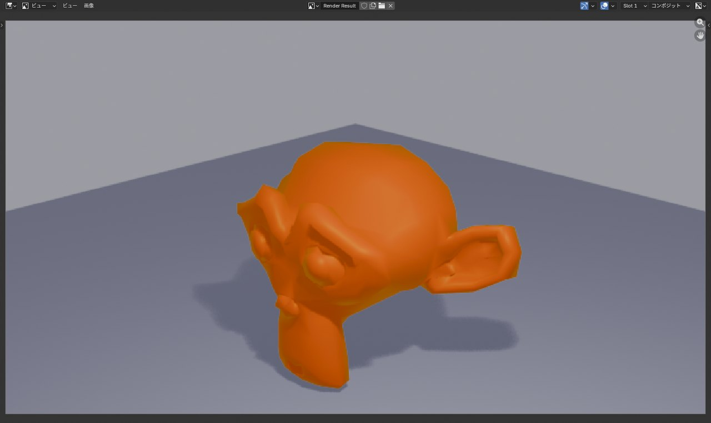
見どころ：押した直後は元の色に近いままです。「SCS 色相/彩度」の彩度を上げ、「SCS 露出/オフセット」の露出を下げると、スザンヌの色が濃くなり、全体が暗く締まります。
実例一覧から選んで追加する（エッジレイズ）（光るスザンヌで試した様子）
ここでは「追加プリセット」の一覧から、輪郭から放射状に光を出す「エッジレイズ」を使います。
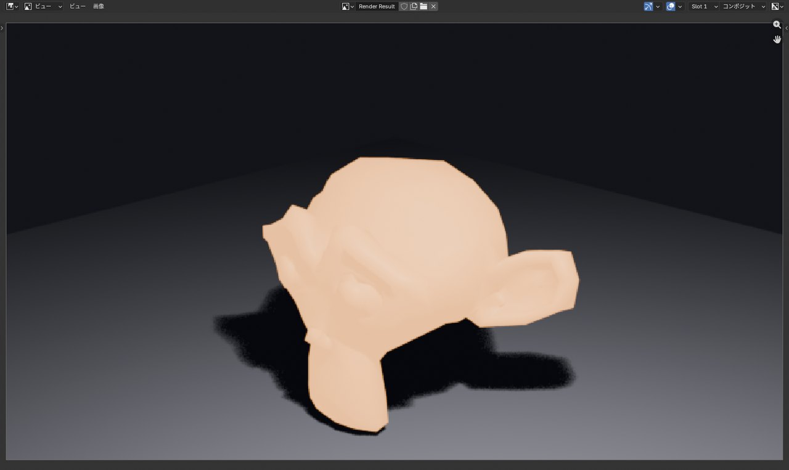
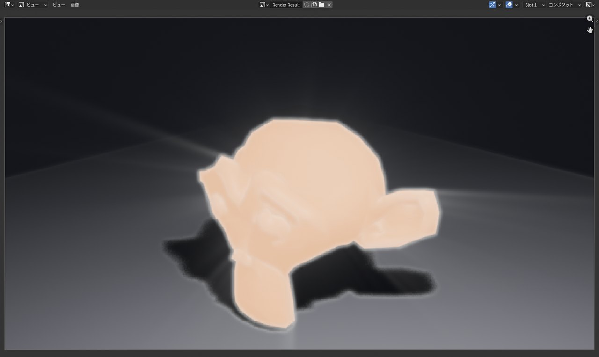
見どころ：明るいスザンヌの輪郭が白く光り、耳や頭の角から背景へ放射状の光の筋が伸びます。
実例赤と青がずれた絵にする（グリッチ）（スザンヌで試した様子）
「グリッチ/デジタルダメージ」は、画像にデジタルの乱れを足すプリセットです。

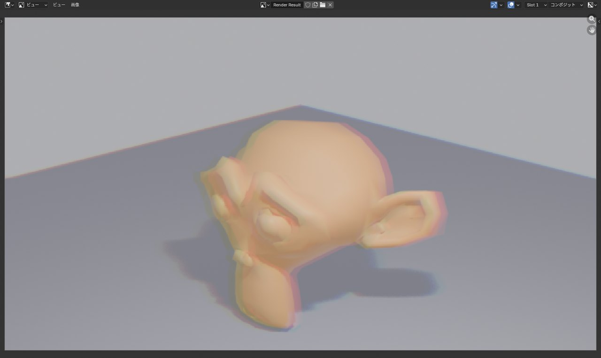
見どころ：スザンヌの輪郭や床の境目で、赤と青の色がずれて見えます。右の耳のあたりや床の奥の線を前の図と比べると分かります。
実例ノーマル（法線）のパスを使って光を足す（法線疑似リライト）（スザンヌで試した様子）
「法線疑似リライト」は、レンダーパスの「ノーマル」（面の向きの情報）を使って、光に向いた面を明るくします。先に「ノーマル」のパスを有効にしておきます。

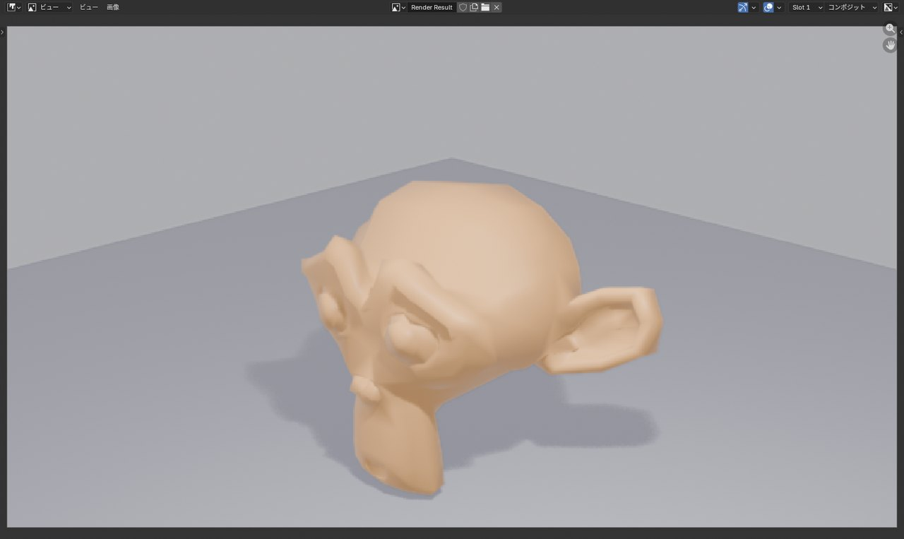
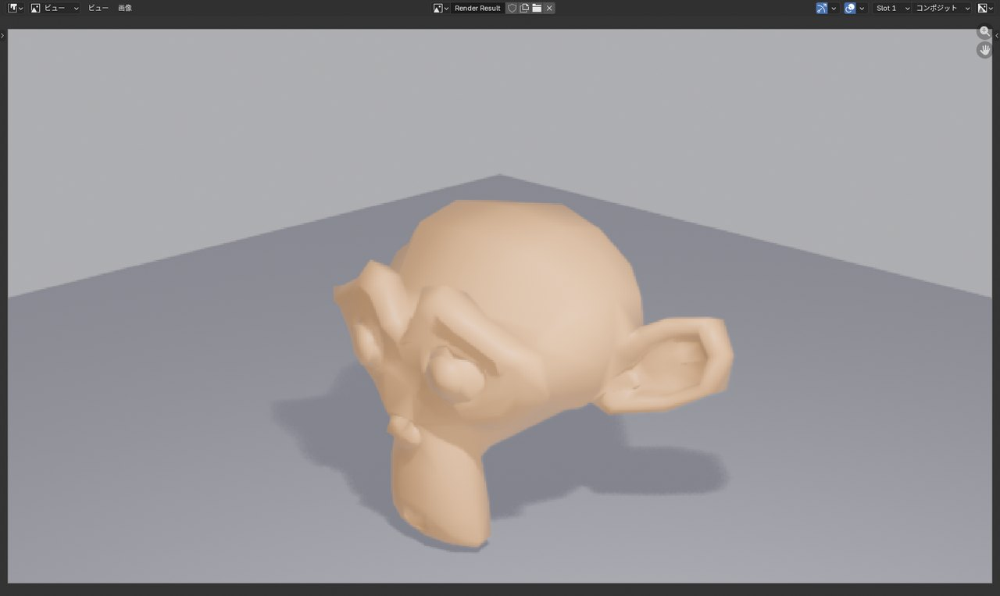
見どころ：シーンのライトを変えずに、上を向いた床とスザンヌの上の面が明るくなります。「SCS 光の向き」の値を変えると、床の明るさは元に近くなり、顎の側が明るくなります。明るい面が光の向きに合わせて移ります。
実例陽炎のように揺らす（陽炎歪み）（スザンヌで試した様子）
「陽炎歪み」は、時間で動くノイズで画像を揺らします。フレームごとに揺れ方が変わります。

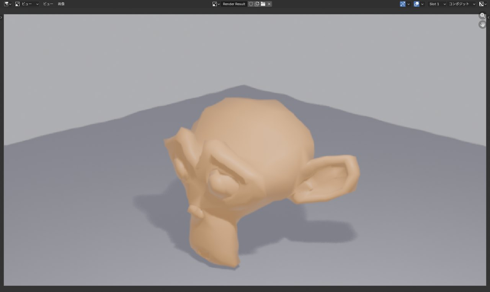
見どころ：床の奥の線やスザンヌの輪郭が波打ちます。フレーム 1 とフレーム 30 では波の形が違うので、動画にすると陽炎のように揺れます。
実例追加したグローを普通のノードとして調整する（光るスザンヌで試した様子）
追加されるのは標準のノードです。中の数値を変えると、レンダー結果が変わります。

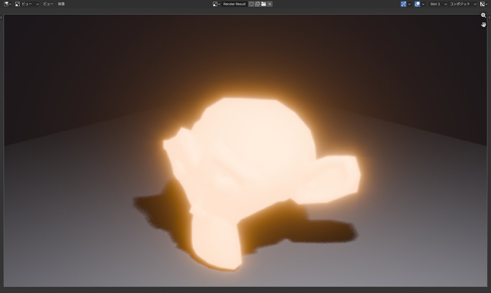
見どころ：しきい値を下げてサイズを上げると、光のにじみが背景や床の遠くまで広がります。
実例パスをファイルに書き出すノードを並べる（マルチパス出力）（ノード画面で試した様子）
「マルチパス出力」は、レンダーパスをまとめて EXR ファイルへ書き出すノードを追加します。
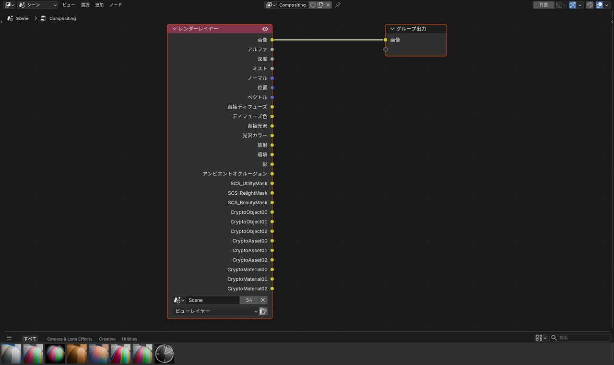
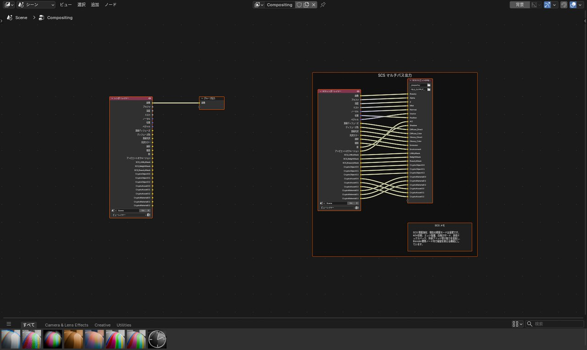
見どころ：右に「SCS マルチパス出力」のフレームができ、今有効なパスと AOV（自分で足した物も）がすべて欄になり、ファイル出力のノードへつながります。合成用の「SCS_UtilityMask」「SCS_RelightMask」「SCS_BeautyMask」も、それぞれ「UtilityMask」「RelightMask」「BeautyMask」の欄へつながります。元の「グループ出力」への線は変わりません。このノードがあると、レンダーのたびに EXR ファイルが書かれるので、空き容量に注意します。
実例ファイルを書かないようにする（ファイル出力を作成）（ノード画面で試した様子）
「ファイル出力を作成」を外すと、ファイル出力のノードを作りません。レンダーのたびにファイルが書かれるのを避けられます。
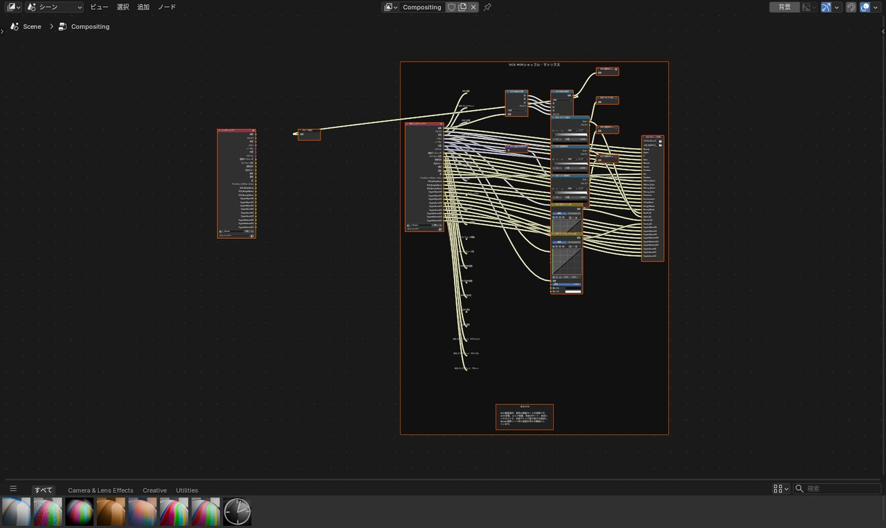
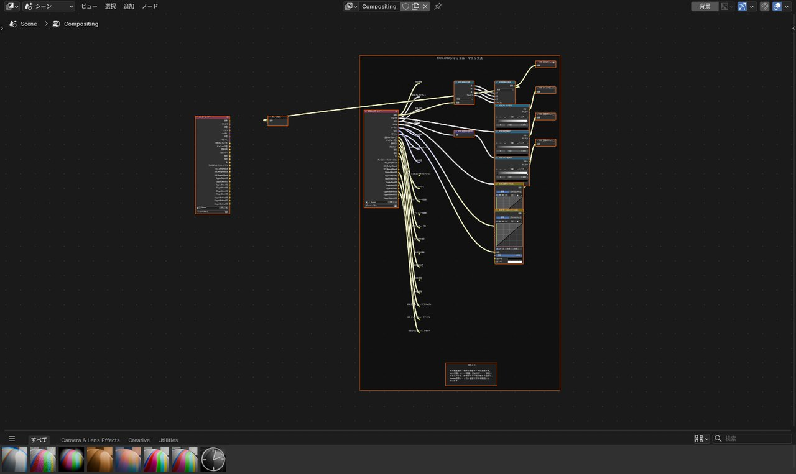
見どころ：チェックを入れた時はフレームの右端にファイル出力のノードができますが、外した時はできません。ほかのノードは同じです。「マルチパス出力」はファイルを書くためのプリセットなので、外した時は何も追加しません。
実例選んだ物だけの白黒のマスクを作る（クリプトマット抽出）（スザンヌで試した様子）
「クリプトマット抽出」は、選んだ物の形を白黒のマスクにするプリセットです。追加しただけでは何も選ばれていないので、結果は黒くなります。

見どころ：押した直後は画面全体が黒くなります。「マットID」にスザンヌを入れると、スザンヌの形だけが明るく抜き出され、ほかは黒いままです。
実際の作業の流れに沿った作例です。手順と、操作の前と後の図を載せています。
合成ノードを足すだけで終わらず、「レンダーパス自動維持」でビューレイヤーのチェックが入るところまで確認できます。
試す前に 同じビューレイヤーでチェックを比較する。
2枚で見る — 合成前の文字と案内灯 → グローを加えた同じ看板 この作例の手順を見る作例を画像で保存 (PNG)導入・トラブルのヘルプ
カメラの撮影距離を変えたら、もう一度「追加プリセット」で「Z深度ボケ」を選び、「選択した効果を適用」を押します。ボケは増えず、足してあるボケが今のピントに合い直します。先に足した効果もそのまま残ります。
「ノード健全性ガード」を有効にすると、コンポジターに足りない基本のノード（レンダーレイヤー・ビューアー・出力）が作られ、つながります。
「07」の橙色の文字と、緑の案内灯のまわりを見比べてください。光の輪郭を周囲に広げて、夜の発光表示に仕上げます。作例の看板、文字、照明はファイルに入っています。


完成ファイル (Platform_Sign_Finished.blend)を開くと、合成に使ったノードと接続を調べられます。グローの枠内で光を混ぜる量を下げ、もう一度レンダーすると、文字の外側のにじみが弱くなります。ほかの効果と比べるときは開始ファイルを開き直し、同じ看板に1種類ずつ加えてください。
WindowsのBlender 5.1.2で、両方の作例を確認しました。すでに調整した作品は複製を作り、同じフレームで結果を比べてください。独自に作り直したプリセットには、旧版と仕上がりが異なるものがあります。
球のハイライトを残したい、奥だけを霞ませたい、切り抜きの縁を確かめたい。三つの目的を、同じ球の図で見比べられます。図を押すと文字と輪郭を拡大できます。


図は仕組みを示すための作図です。実際のBlenderの画面で操作するには、このページの「最初に試す」でグローを追加してください。
明るい所に光のにじみを加えます。
結果：グローのノードのまとまりが、フレームに囲まれてノード画面に追加され、ビューアーと出力のノードにつながります。レンダーし直すと、明るい所の周りに光がにじみます。
光のにじみ、四隅の暗さ、輪郭のくっきりさを 1 枚の絵にまとめます。
結果：押した順に効果が重なります。フレームが右へ順に並び、前のフレームの最後のノードが次のフレームへつながります。
ピントを合わせた物をくっきり残して、奥をぼかします。
結果：ピントの距離の物はくっきりしたままです。そこから離れるほどぼけ、ピントの 2 倍より奥で最も強くなります。手前はカメラに近づくほど強くぼけます。
「追加プリセット」の一覧から選んだプリセットを使います。
結果：選んだプリセットのノードのまとまりが、ノード画面に追加されます。
新しいフレームを既存のノードから離して置きます。
結果：新しいフレームが、既存のノードからさらに右へ離れた場所に置かれます。
テンプレートのファイルで、開いた時にコンポジターが使える状態にします。
結果：.blend ファイルを開いた後などに、コンポジターのノードツリーとレンダーの合成が準備されます。「ノード健全性ガード」が有効なら、足りない基本ノードも作られます。
プリセットを試した後で、元のノードだけの状態に戻します。
結果：このアドオンが追加したノードだけが消えます。自分で置いたノードは残り、出力への線はレンダーレイヤーへ戻ります。
アドオンが出ない・日本語にならない、など全部のアドオンに共通のことは、全体仕様書の「困った時」を見てください。
| アドオン | Smart Composite Suite（smart_composite_suite） |
|---|---|
| 版 | 1.0.0 |
| ZIP | Smart_Composite_Suite_1.0.0.zip |
| 大きさ | 2,669,262 バイト |
| SHA256 | 30eb694462b766d89c145ae11f39197aeb16fab851a2d41023d5bb1dbe49a69e |
Smart Composite Suite 解説書 v1.0.0 ／ 2026-11-18 作成